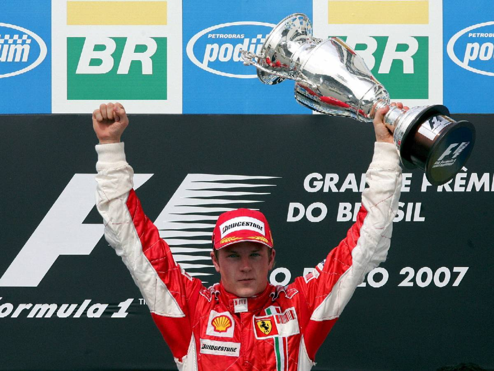
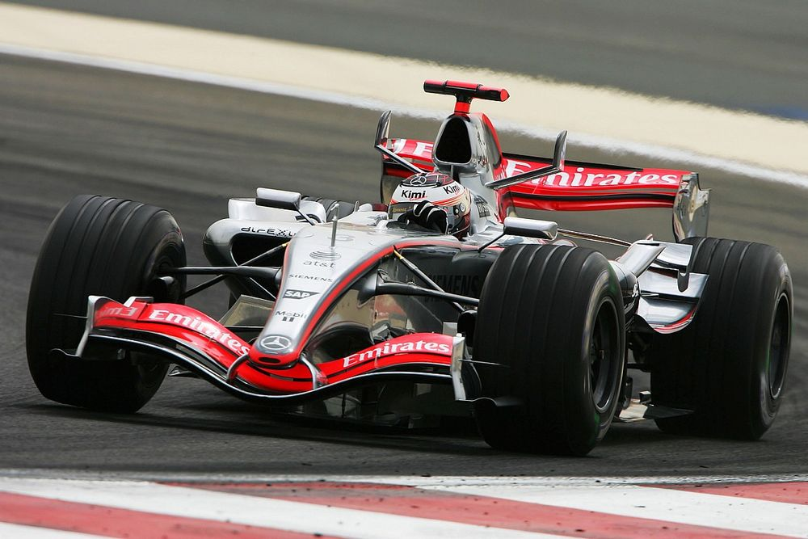
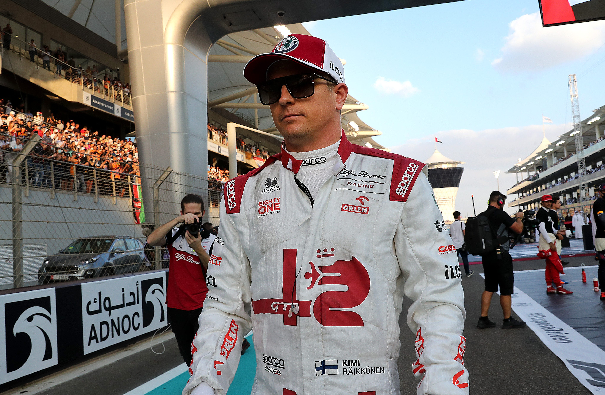

.png)
Kimi Räikkönen – The Iceman
Kimi Räikkönen è uno dei personaggi più amati e unici della Formula 1 moderna. Nato in Finlandia, è stato campione del mondo nel 2007 con la Ferrari, diventando simbolo di freddezza, talento naturale e frasi memorabili. Con oltre 350 GP disputati, è uno dei piloti con più presenze nella storia dello sport.
2007 – Il Titolo Mondiale con Ferrari
Interlagos 2007: Kimi vince il titolo mondiale all’ultima gara.
Nel 2007, Kimi si unì alla Scuderia Ferrari e vinse il titolo mondiale al termine di una delle stagioni più combattute della storia. Superò Lewis Hamilton e Fernando Alonso per un solo punto, grazie a una vittoria decisiva in Brasile. Fu l’ultimo campione Ferrari prima dell’era moderna.
McLaren, Ferrari, Alfa Romeo: Una Carriera Epica
Räikkönen ai tempi della McLaren: velocità pura ma tanta sfortuna.
Prima del suo titolo, Kimi corse per Sauber e poi per McLaren, dove divenne famoso per la sua velocità assoluta ma anche per l'affidabilità carente della vettura. Passò alla Ferrari nel 2007, dove rimase fino al 2009, tornando poi nel 2014 dopo due anni lontano dalla F1. Chiuse la carriera in Alfa Romeo tra il 2019 e il 2021, portando esperienza e carisma.
Kimi negli ultimi anni con Alfa Romeo: ancora amato dai fan.
Lo Stile Unico dell'Iceman
Kimi è famoso per le sue risposte monosillabiche, l’avversione ai media e la sua filosofia di "parlare poco, guidare tanto". Tra le sue frasi storiche si ricorda il celebre “Leave me alone, I know what I'm doing” via radio. Ha sempre preferito far parlare il cronometro, diventando una leggenda silenziosa e carismatica.
Caschi Iconici di Kimi Räikkönen
2021 – Design finale per il suo ultimo GP (Abu Dhabi)
2018 – Casco con inserti bianchi e finiture cromate, stile classico Ferrari
2013 – Look aggressivo con nero opaco e oro durante l'epoca Lotus